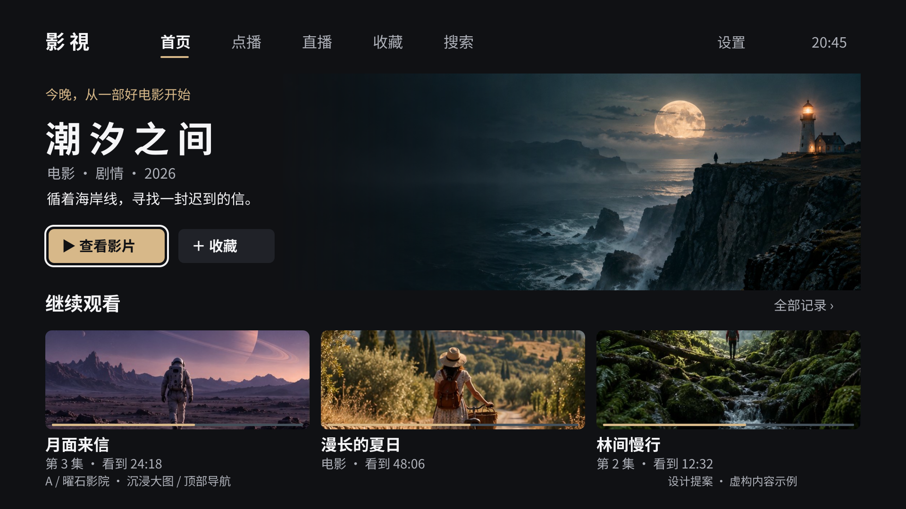
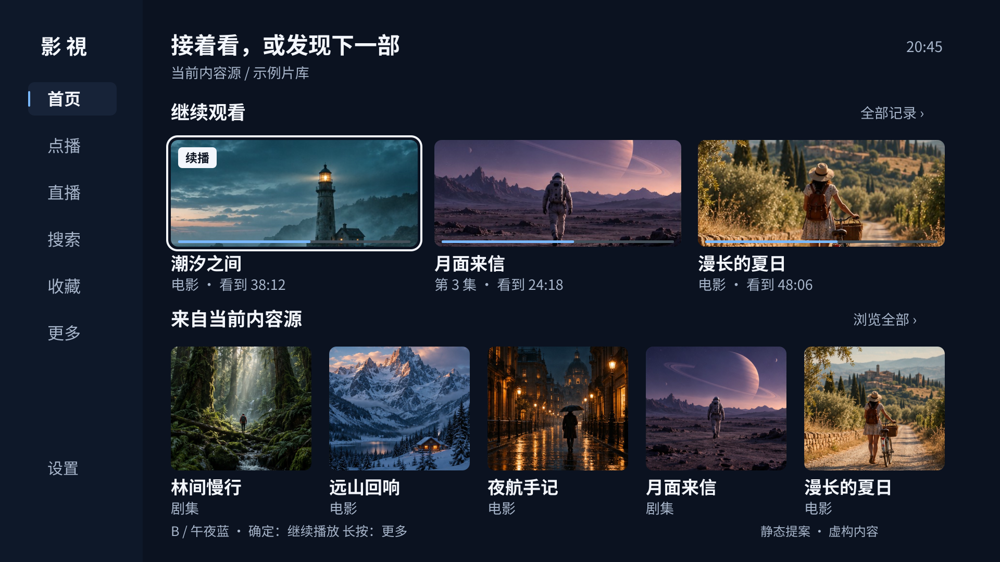
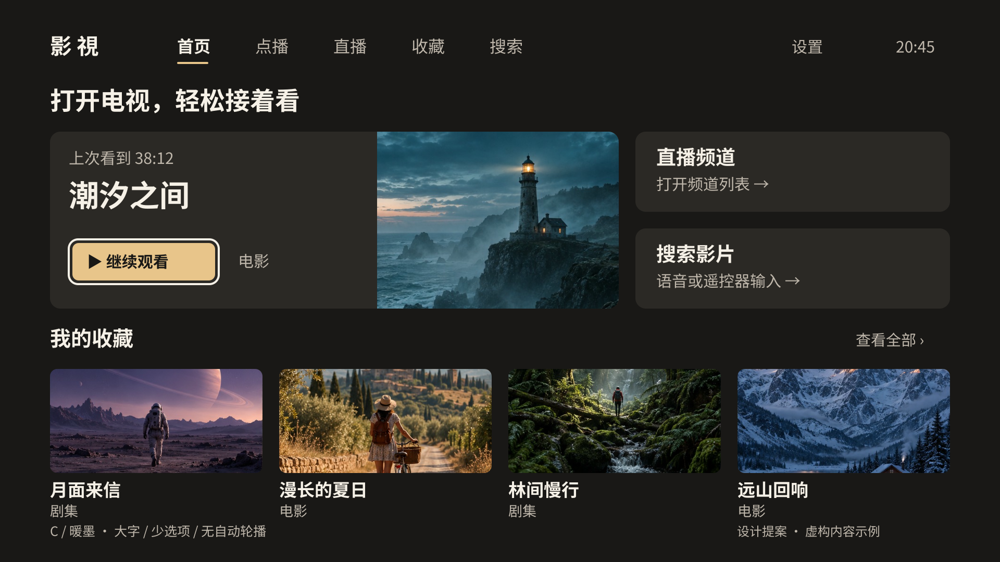
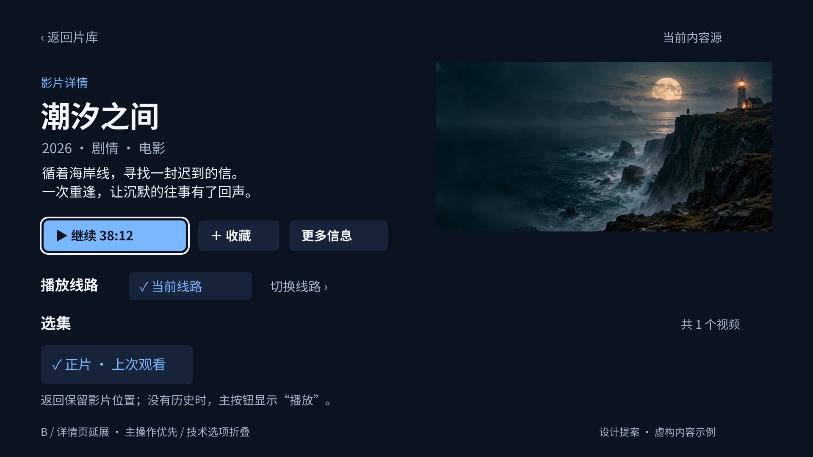

三套方向，不只是换颜色。以下为 1920 × 1080 静态概念图，影片、进度与海报均为虚构示例。界面文字与布局以可编辑 SVG 绘制；电影氛围图与示例海报由 GPT Image 生成。
大图、留白、顶部导航。适合以点播发现为主；依赖优质横图，缺图时必须降级。

打开可编辑 SVG · 打开 PNG
侧边稳定导航，先继续观看，再浏览片库。更贴合外部内容源、点播与直播并存的定位。

更大的文字、更少的首屏选项。适合远距离和家庭共用；浏览密度较低。

先看清影片和续播位置，再操作线路与选集。技术设置不与播放争夺注意力。

已查看当前模拟器首页与仓库 TV 布局/交互代码。未验证安装包与当前源码完全一致，未完成播放、直播、焦点回归和远距离真机测试。所有提案均待用户选择，未修改 Android 应用。